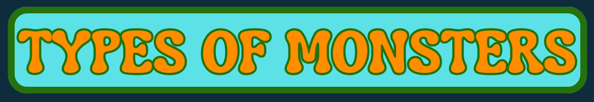
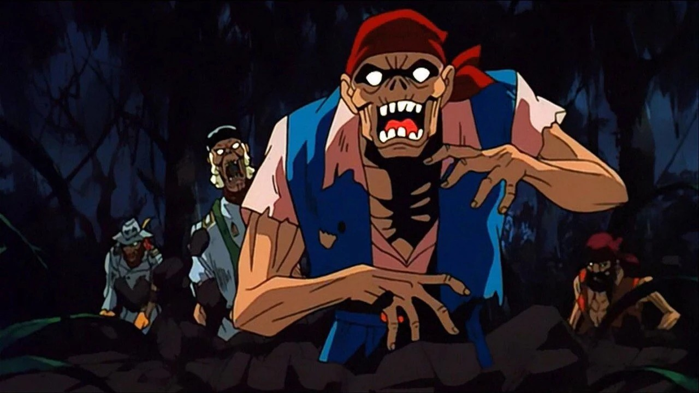
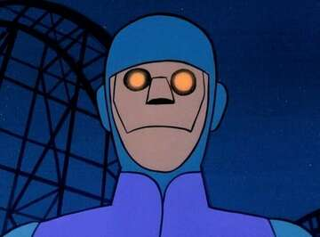
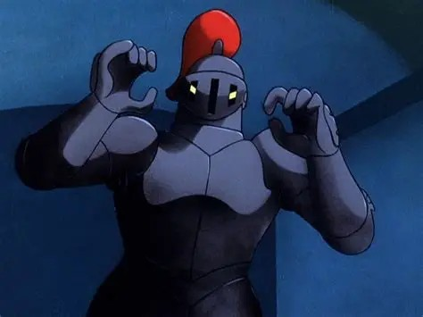

Discover the different types of monsters that appear in the Scooby-Doo universe!

Many Scooby-Doo monsters are fake; however, there are some that are genuinely supernatural. These include ghosts, witches, zombies, and other creatures with real powers that cannot be explained by masks or special effects. Unlike the typical villains, these monsters are not people; they are a real threat to the gang. They can’t just uncover a villain under a mask; they have to try and solve the reasoning behind real supernatural creatures. Movies like Scooby-Doo on Zombie Island and Scooby-Doo and the Witch’s Ghost are examples of real monsters with zombies, witches, and werecats, making their mysteries even scarier!

Some of the monsters in Scooby-Doo are made through technology or science experiments. These include robots and computer viruses and are often real fears that are turned into monsters to scare society. For example, the Phantom Virus is a computer virus that exists inside and outside of a video game. This adds a new level of fear to the mysteries, as the monster doesn’t just affect the computer world but also the real world.Another example is Charlie the Robot, who is a mental humanoid machine that has superhuman strength and was made to look after an amusement park. Charlie ends up getting taken over by a human and becomes destructive and mischievous.

These monsters are usually people in elaborate costumes using special effects and other tricks to typically cover up crimes or revenge plots. These types of monsters appear most often within the Scooby-Doo universe, such as the Black Knight, who pretends to be a ghost to scare people away from a museum and hide criminal activity. Another fake monster is the Ghost Clown, which was the disguise of a hypnotist that wanted revenge on the man that sent him to prison. Ultimately, monsters like these are unmasked, revealing that there was no supernatural reasoning but just someone under a mask.